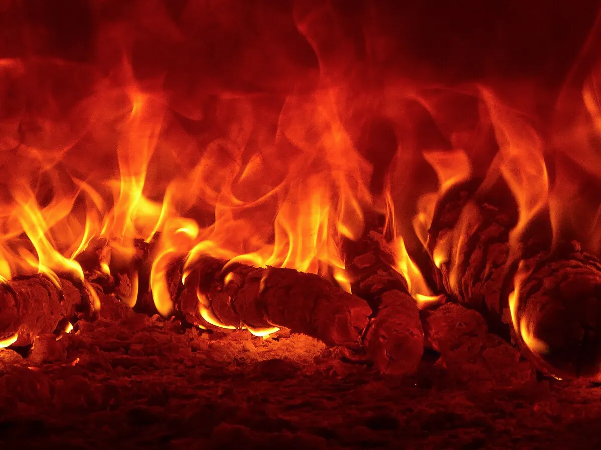
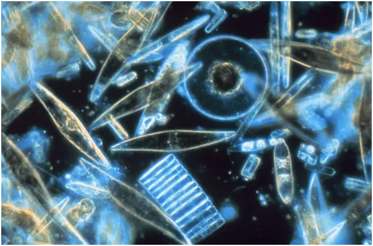
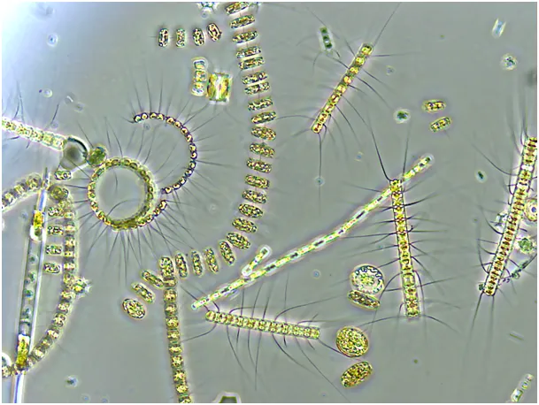
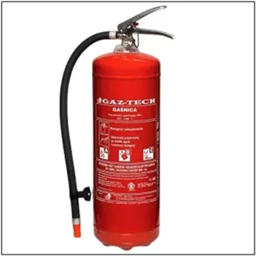

W bilansie tlenu na Ziemi znaczenie roślin, w tym lasów deszczowych, jest mało istotne.
Płomień to plazma, czyli zjonizowany gaz, czwarty stan skupienia materii obok stanów: stałego, płynnego i gazowego. Jonizacja, to proces rozrywania wiązań cząsteczkowych substancji na skutek energii zewnętrznej.
Energia ta może być dostarczona do układu w różnej postaci: pola elektrycznego, fali elektromagnetycznej w zakresie podczerwieni, promieniowania jonizującego złożonego z wysokoenergetycznych cząstek, itp. W ziemskiej atmosferze mamy 21% zabójczego tlenu (O- łac. oxygenium, czyli ogniodajny), 78% obojętnego azotu oraz zaledwie 0,041 % życiodajnego dwutlenku węgla.

Tlen jest pierwiastkiem bardzo aktywnym i łatwo wchodzi w reakcje z innymi pierwiastkami, jest silnie destrukcyjny dla organizmów żywych, powoduje ich starzenie się. Komórki i cząsteczki organiczne w zetknięciu z tlenem ulegają destrukcji przy utlenianiu podstawowego budulca organizmów żywych węgla (C, łac. carboneum ).

Reakcja utleniania może zachodzić powoli jak to ma miejsce w rdzewieniu żelaza lub gwałtownie, gdy reakcji towarzyszy duża ilość wydzielanego ciepła pozwalająca na dalsze lawinowe utlenianie materiału w powstałym płomieniu. W tej drugiej sytuacji mówimy o spalaniu.
Pewne substancje podczas spalania wydzielają na tyle dużo energii, że proces po zapłonie zachodzi samoistnie jak w przypadku np. benzyny, czy suchego drewna, są to substancje łatwopalne. Inne substancje, np. zimna oliwa lub parafina w stanie stałym, nie jest w stanie samodzielnie podtrzymać procesu spalania. Wynalazek knota, jest genialnym rozwiązaniem, w którym knot otoczony plazmą (płomieniem) dostarcza gorącej łatwopalnej, cieczy ze strefy w środku płomienia, gdzie nie ma niezbędnego tlenu do obszaru, gdzie w styku z tlenem atmosferycznym dochodzi do utlenienia węgla zawartego w gorącym paliwie. Spalaniu podlega też knot, ale tylko w przestrzeni gdzie występują wolne atomy tlenu.

Są różne metody na zatrzymanie tej lawinowej reakcji: polanie wodą powoduje ochłodzenie wszystkich elementów i przerwanie procesu z powodu braku energii do kontynuacji. Inną metodą jest odcięcie dopływu tlenu poprzez otoczenie płonących przedmiotów gazem niepalnym np. dwutlenkiem węgla. Innym sposobem jest osłonięcie płonącego przedmiotu substancjami chemicznymi o właściwościach antykatalitycznych, czyli spowalniających proces utleniania. Substancje te w postaci suchego proszku rozpyla się wokół płomienia przy pomocy sprężonego obojętnego chemicznie gazu.
P.s. Tlen produkowany jest z dwutlenku węgla przez organizmy roślinne w procesie fotosyntezy pod wpływem światła słonecznego. Nocą zachodzi proces odwrotny, rośliny podobnie jak zwierzęta absorbują tlen i wydzielają dwutlenek węgla, dlatego w bilansie tlenu na Ziemi znaczenie roślin jest mało istotne. Większość tlenu pochodzi z oceanu, w tym od najdziwniejszych organizmów na Ziemi jakimi są okrzemki, przybierające bardzo różne kształty. Lasy deszczowe mają olbrzymie znaczenie w powstawaniu pary wodnej, kluczowego czynnika dla efektu szklarniowego w ziemskiej atmosferze, bez którego klimat na ziemi byłby radykalnie chłodniejszy.
Paweł Klimczewski